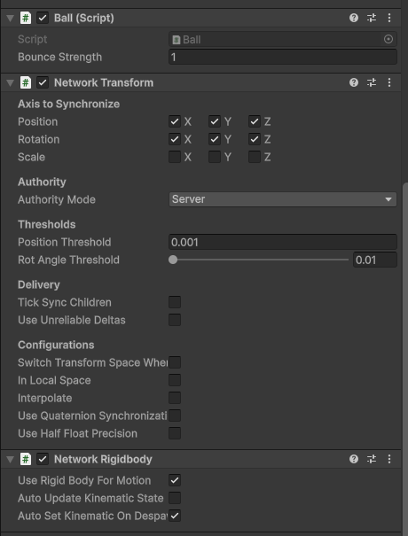
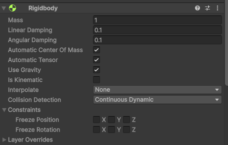
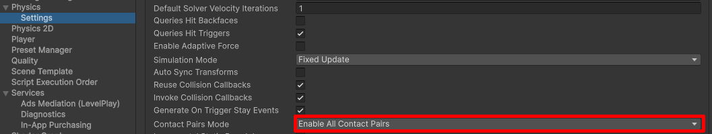
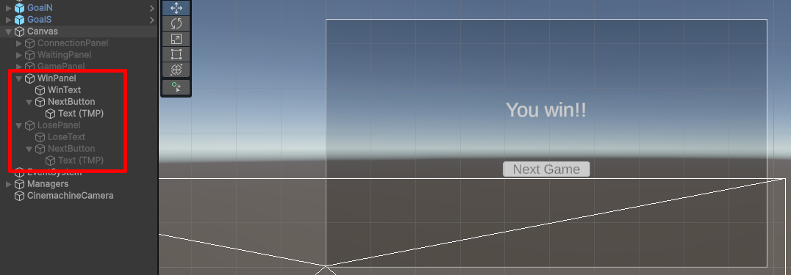

3.5 Mecànica del joc
En aquesta secció, implementarem la mecànica del joc, que inclou la lògica de la pilota, dels gols i la puntuació.
Ostres pilotes!
Dins de l'escena de joc, creem un nou Empty GameObject anomenat "BallManager". A aquest objecte, li afegim un component NetworkObject i un script anomenat BallManager.
1 2 3 4 5 6 7 8 9 10 11 12 13 14 15 16 17 18 19 20 21 22 23 24 25 26 27 28 29 30 | |
Fins ací tot és conegut: creem la classe BallManager com a singleton i ens subscrivim a l'esdeveniment de canvi d'estat del joc. Ara, implementarem la lògica per crear la pilota quan el joc comenci, creant el mètode GameStateChangedCallback:
1 2 3 4 5 6 7 8 9 10 11 12 13 14 15 16 17 18 19 | |
En aquest codi, quan el joc canvia a l'estat Game, es crida al mètode SpawnBall(), que només s'executa al servidor. Aquest mètode instància la pilota a la posició (0, 1, 0) i la fa aparèixer a tots els clients mitjançant NetworkObject.Spawn().
Assegura't que tant el prefab de la pilota com el BallManager tinguen el component NetworkObject. La pilota també haurà de tindre un component NetworkRigidbody.
En aquest punt, ja tenim la pilota apareixent a l'escena quan el joc comença. Segurament hauràs de fer ajustos quant a les físiques dels peus del jugador o el Step Offset per a que no pujen a la pilota, però això ja és qüestió de proves i errors.
Millorant les físiques
Les físiques en jocs en xarxa poden ser complicades, especialment quan es tracta de col·lisions. Per a millorar la resposta de la pilota podem fer varis ajustos a les propietats del Rigidbody de la pilota.
Abans d'entrar en les físiques de la pilota, convé conèxer les propietats del NetworkRigidbodyi el seu funcionament.
NetworkRigidbody és un component que estableix el Rigidbody del GameObject en mode cinemàtic en totes les instàncies no autoritàries. L'autoritat es determina pel component NetworkTransform (obligatori) adjunt al mateix GameObject que el NetworkRigidbody. Tant si el NetworkTransform és Server o Owner Authoritative, el model d'autoritat es replica als clients. D'aquesta manera, la simulació física s'executa a la instància autoritativa i les posicions resultants sincronitzen a les instàncies no autoritatives, cadascuna amb el seu RigidBody cinemàtic, sense cap interferència.
Configurar NetworkRigidbody
El NetworkRigidbody a la vista Inspectorté 3 valors configurables:
- Use Rigid Body for Motion: Quan està habilitat i s'utilitza un NetworkTransform, el NetworkTransform utilitza la posició i la rotació de físiques per sincronitzar els canvis durant la fase d'actualització del bucle FixedUpdate.
- Auto Update Kinematic State: Quan està habilitat, NetworkRigidbody determina automàticament si la instància actual ha de ser cinemàtica o no cinemàtica.
- Auto Set Kinematic On Despawn: Quan està habilitada, aquesta opció fa que el cos rígid siga cinemàtic quan desapareix (despawn).
Nosaltres activarem la primera i la tercera opció i desactivarem la segona, ja que no volem que el rigidbody siga cinemàtic als clients. Per a que això funcione hem de mantindre el NetworkTransform en mode autoritat del servidor, ja que és el que determina l'autoritat del NetworkRigidbody.

També desactivem la interpolació del Rigidbody i posarem la detecció de col·lisions a Continuous Dynamic per a millorar la resposta de les col·lisions.

Ara el problema que tenim és que alguns esdeveniments de col·lisió no es disparen quan s'utilitza NetworkRigidBody:
Al servidor, tots els esdeveniments de col·lisió i activació (com ara OnCollisionEnter) es disparen com s'esperava i podeu accedir (i canviar) els valors del Rigidbody (com ara la velocitat).
Als clients, Rigidbody és cinemàtic. Els esdeveniments activació encara es disparen, però els esdeveniments de col·lisió no es dispararan quan col·lisionen amb altres instàncies de Rigidbody en xarxa si la configuració física del vostre projecte està definida als parells de contacte predeterminats (Contact Pairs Mode).
Per a canviar aquesta configuració hem d'anar a Project Settings > Physics > Setting > Game Object > Contact Pairs Mode i canviar-lo a Enable All Contact Pairs.

Detecció de col·lisions en la pilota
Ara ja podem detectar les col·lisions de la pilota tant al servidor com als clients. Per a això, modifiquem l'script Ball per a que utilitze el mètode OnCollisionEnter per a detectar les col·lisions amb els jugadors i aplicar una força a la pilota en la direcció del jugador que ha col·lisionat.
Important: Afwegeix el tag "Player" tant al prefab del jugador com al collider dels peus per a que funcione.
1 2 3 4 5 6 7 8 9 10 11 12 13 14 15 16 17 18 19 20 21 22 | |
Gols i puntuació
Per a detectar els gols, usarem l'script Ball que ja tenim. Afegirem un nou event, OnGoal, que es dispararà quan la pilota entre a una de les porteries.
Abans, canvia els tags de cadascuna de les porteries a "GoalTeam1" per a la porteria sud i "GoalTeam2" per a la porteria nord. Després, implementa el següent codi a l'script Ball:
1 2 3 4 5 6 7 8 9 10 11 12 13 14 15 16 17 18 19 20 21 22 | |
Marcador de puntuació
Fem el marcador en el panel GamePanel. Creem dos nous TextMeshProUGUI anomenats "ScoreTeam1" i "ScoreTeam2" i els col·loquem a la part superior central del panell.
Afegim al GameObject Managers un nou Empty GameObject anomenat ScoreManager i li afegim un component NetworkObject.
Després, creem un nou script anomenat ScoreManager i l'afegim al ScoreManager:
1 2 3 4 5 6 7 8 9 10 11 12 13 14 15 16 17 18 19 20 21 22 23 24 25 26 27 28 29 30 31 32 33 34 35 36 37 38 39 40 41 42 43 44 45 46 47 48 49 50 51 52 53 54 55 56 57 58 59 60 61 62 63 64 65 66 67 68 69 70 71 72 73 74 75 76 77 | |
Primer, ens subscrivim a l'esdeveniment OnGoal de la classe Ball i a l'esdeveniment de canvi d'estat del joc, només al servidor.
Quan el joc comença, resetejem les puntuacions usant el mètode ResetScores(), el qual crida a UpdateScoreClientRpc per a actualitzar les puntuacions a tots els clients.
Quan es marca un gol, es crida al callback BallOnGoalCallback, que actualitza la puntuació de l'equip i després crida a UpdateScoreClientRpc per a actualitzar les puntuacions a tots els clients.
El RPC UpdateScoreClientRpc actualitza les variables de puntuació i els textos del marcador a cada client.
Recorda assignar els referències dels textos del marcador a les variables team1ScoreText i team2ScoreText des de l'Inspector.
Mostrant el propi marcador amb un color diferent
Per a mostrar el marcador del propi equip amb un color diferent, podem modificar el mètode UpdateScoreClientRpc per a canviar el color del text segons l'equip al qual pertany el jugador local.
Però abans hem de determinar a quin equip pertany el jugador local. Això ho farem a l'script GameStateManager, on ja tenim la lògica per a assignar els jugadors als equips. Afegim una nova variable _localTeam i la seua propietat pública LocalTeam que s'actualitzarà quan el jugador local s'uneix a un equip:
1 2 3 4 5 6 7 8 9 10 11 12 13 14 | |
Ara, al mètode UpdateScoreClientRpc del ScoreManager, podem canviar el color del text segons l'equip del jugador local:
1 2 3 4 5 6 7 8 9 10 11 12 13 14 | |
Reubicant la pilota després d'un gol
Per a tornar a posar la pilota al centre del camp després d'un gol, utilitzarem una corrutina al BallManager que es cridarà des del callback de gol a ScoreManager.
1 2 3 4 5 6 7 8 9 10 11 12 13 14 15 16 17 18 19 20 21 22 23 24 25 26 27 28 29 30 31 32 33 34 35 36 37 38 39 40 | |
En aquest codi, quan es marca un gol, es crida al callback BallOnGoalCallback, que inicia la corrutina ResetBall. Aquesta corrutina espera uns segons (en aquest cas, 2 segons) i després reinicia la velocitat de la pilota a zero i la col·loca de nou al centre del camp.
També ens hem de desubscriure de l'esdeveniment OnGoal a l'mètode OnDestroy per a evitar possibles errors quan el BallManager es destruïsca.
Tasca
Implementa Crea la lògica per a que quan es marque gol, els jugadors tornen a les seues posicions d'inici. Consell: Implementa un PlayerManager que mantinga una llista de tots els jugadors i les seues posicions d'inici.
Victòria i derrota
Per a finalitzar la mecànica del joc, implementarem la lògica de victòria i derrota.
Detectant la victòria
Per a detectar la victòria, podem afegir una nova variable winningScore al ScoreManager que determinarà quina puntuació és necessària per a guanyar el joc.
1 2 3 4 5 6 7 8 9 10 11 12 13 14 15 16 17 18 19 20 | |
Més tard, implementarem la lògica per a canviar l'estat del joc.
Panells de victòria i derrota
Cream dos nous panells al Canvas anomenats WinPanel i LosePanel. Aquests panells es mostraran quan un equip guanye o perda el joc.
Cada panell tindra un TextMeshProUGUI que mostrarà un missatge de victòria o derrota i un botó per a tornar al menú principal amb el text Next Game.

L'objectiu del botó Next Game serà recargar la escena del joc i apagar el NetworkManager, perquè si és el host necessitem apagar-ho per a poder crear un joc nou i si és un client perquè necessita deixar el servidor per a poder unir-se a un altre joc.
A continuació, en l'script UIManager, implementarem la lògica per a mostrar els panells de victòria i derrota quan el joc acabe. Primer afegim 2 noves variables per a referenciar els panells:
1 2 3 4 | |
Després, creem dos nous mètodes per a mostrar els panells de victòria i derrota:
1 2 3 4 5 6 7 8 9 10 11 12 13 14 15 16 17 18 19 20 | |
Mantenim el gamePannel actiu perquè volem que el marcador de puntuació siga visible tant al panell de victòria com al de derrota.
Afegim la lògica per a canviar de panell al GameStateManagerCallback del UIManager:
1 2 3 4 5 6 7 8 9 10 11 12 13 14 15 | |
Els nous estats els hem d'afegir a l'enum State del GameStateManager:
1 2 3 | |
Per últim afegim al UIManager el callback per a canviar l'estat del joc quan un equip guanye:
1 2 3 4 5 6 7 8 9 10 11 12 | |
A l'inspector, afegim els panells de victòria i derrota a les variables winPannel i losePannel del UIManager i assignem el mètode NextButtonCallback al botó Next Game de cada panell.
Com la victòria i/o derrota es detecta al ScoreManager, necessitem una manera de canviar l'estat del joc des d'aquest script. Verifica que tens el següent mètode al GameStateManager per a canviar l'estat del joc, si no, afegeix-lo:
1 2 3 4 5 6 | |
També creem un mètode públic que cride a un RPC al GameStateManager per a canviar l'estat del joc depenent de quin equip ha obtés la victòria:
1 2 3 4 5 6 7 8 9 10 11 12 13 14 15 16 17 | |
Aquest RPC s'encarrega de canviar l'estat del joc a Win o Lose segons quin equip ha guanyat i quin equip és el del jugador local.
Ara, al ScoreManager, cridem al mètode EndGame del GameStateManager quan un equip arribe a la puntuació de victòria:
1 2 3 4 5 6 7 8 9 10 11 12 13 14 15 16 17 18 | |
Ací estem comunicant al GameStateManager quin equip ha guanyat perquè puga canviar l'estat del joc i mostrar el panell de victòria o derrota corresponent a cada client.
Comprova que tot funcione correctament: quan un equip arribe a la puntuació de victòria, hauria de mostrar-se el panell de victòria als jugadors d'aquest equip i el panell de derrota als jugadors de l'equip contrari. A més, el botó Next Game hauria de recarregar la escena i apagar el NetworkManager per a permetre crear o unir-se a un nou joc.